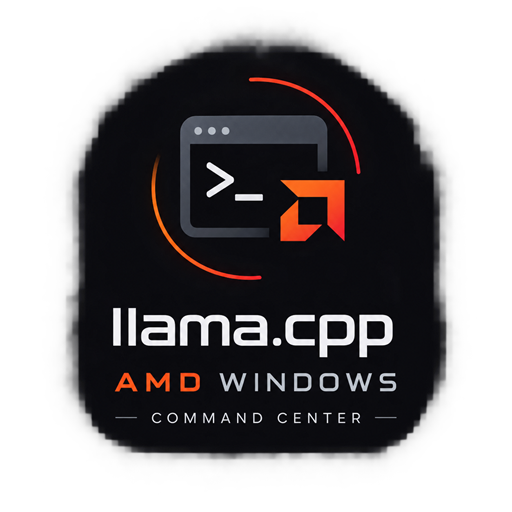
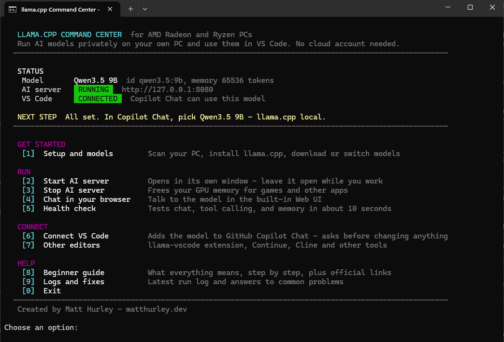
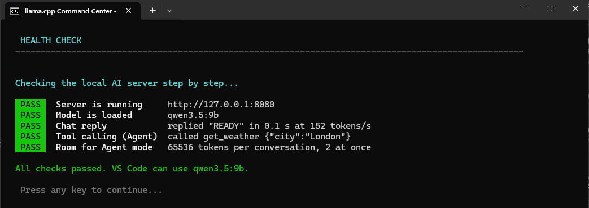
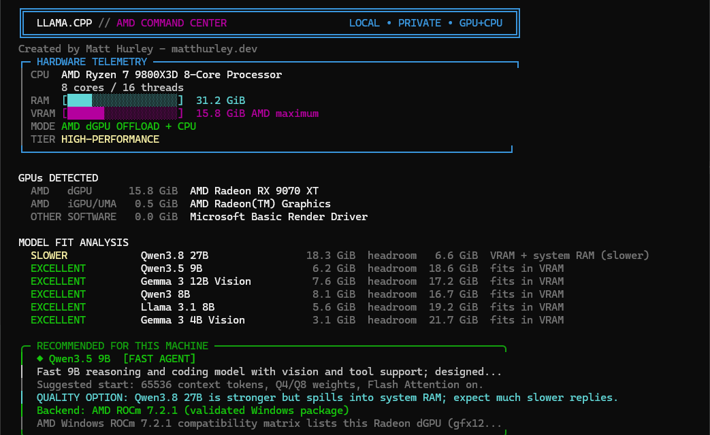

llama.cpp AMD Command Center
Run AI models privately on your AMD Radeon PC and use them in VS Code Copilot Chat, set up from one friendly Windows menu. No subscription and no cloud account.
Community project. An independent helper around llama.cpp. It is not affiliated with, endorsed by, or published by ggml-org, AMD, Microsoft, GitHub, Continue, Cline, or Anthropic.

What you get
Private, local AI
The model runs on your own Radeon graphics card. Your code and questions stay on your PC.
Guided setup
Scans your hardware, picks a model that fits, and verifies every download. Nothing downloads until you type YES.
Copilot Chat, including Agent
One option adds the model to GitHub Copilot Chat. Your Copilot account and cloud models are untouched.
Health check
Tests chat, tool calling, and memory in about 10 seconds, and explains any failure in plain English.
Quick start
Allow about 15 minutes, most of it the one-time 6 GB model download.
- Update your AMD graphics driver (AMD Software: Adrenalin Edition).
- Download the ZIP from the latest release, right-click it, choose Extract All, and open the extracted folder. Do not run it from inside the ZIP.
- Double-click
Start-LlamaCpp.cmd. Windows may show a SmartScreen warning because the file came from the internet. If you downloaded it from the release page, choose More info → Run anyway. - Choose [1] Setup and models, then [1] First-time setup, and type
YESwhen asked. - Choose [2] Start AI server. A second window opens: leave it open. The menu shows READY when the model has loaded.
- Choose [5] Health check. Every line should say PASS.
- Choose [6] Connect VS Code, type
YES, then follow the four steps it prints.

The menu
| Option | What it does |
|---|---|
| [1] Setup and models | First-time install, model browser, llama.cpp updates, diagnostics, and uninstall. |
| [2] Start AI server | Starts the model in its own window and waits until it is ready. |
| [3] Stop AI server | Frees GPU memory, for example before gaming. Asks first. |
| [4] Chat in your browser | Opens the built-in chat page at http://127.0.0.1:8080/. |
| [5] Health check | Tests the server, a chat reply, tool calling, and memory for Agent mode. |
| [6] Connect VS Code | Adds the model to GitHub Copilot Chat. Backs up first and only edits its own entry. You connect once: after that, switching models updates VS Code automatically. |
| [7] Other editors | llama-vscode, Continue, Cline, and any OpenAI-compatible tool. |
| [8] Beginner guide | Plain-English explanations of every term, plus official links. |
| [9] Logs and fixes | The latest run log and answers to common problems. |
| [M] Live monitor | Server status, active model, and prompt/generation speed, refreshing every 2 seconds. |
Using the model in VS Code
- In VS Code press Ctrl+Shift+P, type Reload Window, and press Enter.
- Open Copilot Chat with Ctrl+Alt+I.
- Click the model name under the chat box and choose Qwen3.5 9B - llama.cpp local.
- Choose Agent to let it read and edit files, or Ask for questions.
Switch back to a cloud model at any time from the same list. Keep the AI server running while you use the local model.
Which model?
The setup recommends the strongest tool-capable model that fits entirely in your graphics card's memory. Models that spill into system RAM still work, but reply several times more slowly.
| Model | Download | Agent mode | Vision | Notes |
|---|---|---|---|---|
| Qwen3.5 9B | 6.2 GB | ✓ | ✓ | Recommended for 12–16 GB Radeon cards. On an RX 9070 XT: fully on the GPU, about 45–90 tokens/s, 64k context. |
| Qwen3.8 27B | 18.3 GB | ✓ | ✓ | Strongest answers, but on a 16 GB card part of it runs from system RAM: roughly 4–7 tokens/s. |
| Qwen3 8B | 8.1 GB | ✓ | High-quality 8-bit weights. | |
| Llama 3.1 8B | 5.6 GB | ✓ | Proven general-purpose model. | |
| Gemma 3 12B | 7.6 GB | ✓ | Chat and image understanding. | |
| Gemma 3 4B | 3.1 GB | ✓ | For 8 GB systems and Ryzen integrated graphics. | |
| Qwen3 4B | 2.3 GB | ✓ | Smallest and fastest; good for CPU-only machines. | |
| Ornith 1.5 9B (experimental) | 6.2 GB | ✓ | ✓ | Community fine-tune of Qwen3.5 9B. Same memory use, offered as an A/B option and never picked automatically. Its publisher's benchmark claims are not verified here. Needs the Vulkan backend: AMD's ROCm 7.2.1 package cannot load it. Not recommended on RX 9000-series cards for now: on an RX 9070 XT, Vulkan lost the GPU during long Agent sessions and once crashed Windows. Use ROCm with Qwen3.5 9B there. |

How it is tuned for Copilot, and why
These settings came from diagnosing real Copilot failures on an RX 9070 XT. They are applied automatically when you activate a model.
| Setting | Value | Why |
|---|---|---|
| Context per conversation | 65,536 tokens | Copilot's Agent prompt alone is 26k–40k tokens. Below about 32k, VS Code fails with No lowest priority node found. |
| Conversations at once | 2 (131,072-token pool) | VS Code can send a second large request while an Agent turn runs. With room for only one, both fail with Server error: 500. |
| Thinking | Off for tool-capable models | With thinking on, Qwen often hides its tool call inside the thinking text and VS Code shows Sorry, no response was returned. |
| VS Code token budget | 57,344 in / 8,192 out | Matches one conversation's context. |
| Network | 127.0.0.1 only | Other devices on your network cannot reach the server. |
Troubleshooting
Start with [5] Health check. It names the failing step and what to do.
| What you see | What to do |
|---|---|
| Health check: Server is running fails | Choose [2] and wait for READY. Loading takes 5–60 seconds. |
| No lowest priority node found | The context is too small for Copilot. In [1] activate your model again (it now gets 64k), then stop and start the server. |
| Sorry, no response was returned | Re-activate the model in [1] so thinking is turned off, then restart the server. |
| Server error: 500 / Context size has been exceeded | Re-activate the model in [1] for the two-conversation setting, then restart the server. |
| ERR_CONNECTION_RESET | The server stopped mid-reply. Start it with [2] and click Try again. |
| Model missing from Copilot's list | Run [6] again, then Reload Window in VS Code. |
| Replies are very slow | Pick a model marked VRAM (not VRAM+RAM) in the model browser. |
| Graphics card not detected | Update the AMD driver, restart Windows, then run Diagnostics from [1]. |
AMD backends
ROCm
AMD's validated Windows package (ROCm 7.2.1) for Radeon cards on AMD's list, such as the RX 9070 XT. Fastest on supported cards.
Vulkan
The official llama.cpp Vulkan build for Ryzen integrated graphics, older Radeon cards, and everything else.
The setup chooses automatically on a fresh install; the backend selector in [1] lets you override it. Updates keep the backend you have installed.
Other editors and tools
- llama-vscode: the official llama.cpp VS Code extension (
ggml-org.llama-vscode). Option [7] installs it and points its endpoint settings at your server. Your other settings are kept, and if yoursettings.jsonhas comments it shows the lines to paste instead. - Continue: option [7] adds a marked, removable block to Continue's
config.yaml(backed up first). If you already have your ownmodels:list, it shows the lines to paste instead of editing the file. - Cline and OpenAI-compatible tools: base URL
http://127.0.0.1:8080/v1, modelqwen3.5:9b, API keylocal. - Claude Code needs an Anthropic-compatible gateway; this project does not install or claim support for one.
Safety and privacy
- Nothing is installed or downloaded until you choose it and confirm.
- Model files are checked against their published SHA-256 values before activation. AMD publishes no SHA-256 for its ROCm package, so its hash is recorded locally instead.
- The server listens on
127.0.0.1only and needs no API key. - VS Code settings are backed up before any change, and only the
llama.cpp localentry is edited. - Run logs live in
%LOCALAPPDATA%\Programs\llama.cpp\logs; common keys and tokens are removed automatically.